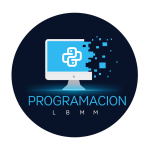

Especialidad de Programación
Volver

Programación
Especialidad Técnica · Liceo Bicentenario Manuel Montt
HTML5
JavaScript
Python
MySQL
Forma técnicos con competencias en desarrollo de software, web, bases de datos, soporte y automatización. Alta demanda laboral y continuidad de estudios en el área TI.
Campo laboral
Las tecnologías de la información se usan en casi todos los sectores. Un egresado puede trabajar en empresas privadas, instituciones públicas y emprendimientos tecnológicos.
- Desarrollo de software y aplicaciones
- Desarrollo web y aplicaciones web
- Programación de sistemas y bases de datos
- Soporte técnico y mantenimiento
- Telecomunicaciones, bancos y seguros
- Agencias de marketing digital
- Videojuegos y soluciones digitales
- Robótica, Arduino y automatización
- Emprendimientos independientes
Continuidad de estudios
- Técnico en Computación e Informática
- Analista Programador
- Ingeniería en Informática
- Ingeniería de Software
- Ciberseguridad
- Ciencia de Datos
- Desarrollo de aplicaciones
Jefe de Carrera
German Villar Martinez
Jefe de Carrera · Programación
Sueldos en Chile (referencia 2026)
Los ingresos varían según experiencia y especialización. Datos referenciales según Indeed (agosto 2026).
Junior
$945.000 – $952.000
Ingreso mínimo 2026: $553.553. Con experiencia, especialización y estudios superiores el sueldo puede superar ampliamente estos promedios.
Importancia
La programación es clave para la transformación digital. No solo se trata de escribir código: implica analizar problemas, diseñar soluciones, administrar información y mejorar procesos con tecnología.
El Liceo Manuel Montt creó esta especialidad ante la creciente demanda de profesionales TI y para fortalecer el pensamiento computacional de los estudiantes.
Perfil de egreso
El egresado puede participar en proyectos informáticos, desarrollar aplicaciones y sitios web, trabajar con bases de datos, mantener software y hardware, instalar sistemas operativos y entregar soporte técnico.
Estas competencias permiten incorporarse a cargos técnicos o continuar estudios hacia roles de mayor especialización.
Resumen
La especialidad de Programación prepara para un sector en constante evolución. Destacan la variedad de áreas laborales, la continuidad de estudios, las competencias digitales y las oportunidades de crecimiento en la industria tecnológica. En Chile los ingresos pueden partir cerca del millón de pesos y subir con experiencia y especialización.
¿Quieres ver más especialidades o los proyectos de los estudiantes?